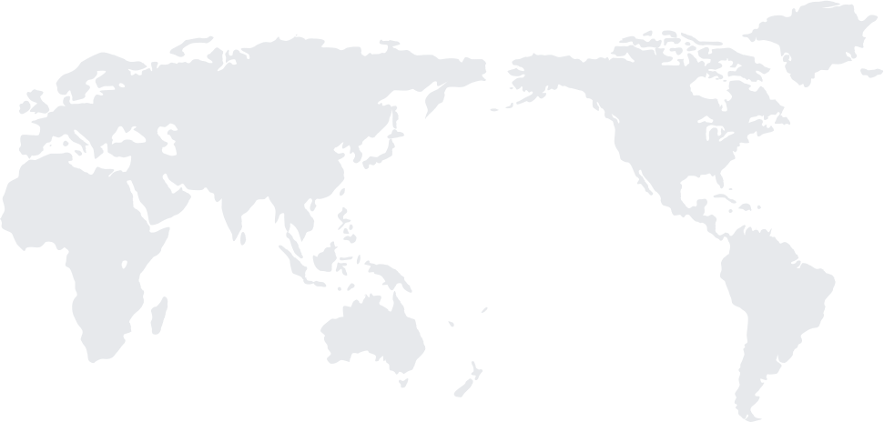

Selected work
Hoge veluwe national parkWhere Art meets Nature
Dutch hearth foundationAn online platform with heart
Kwik-Fit automotive parts repairResponsive e-commerce wesite
I’m currently working on the online design system for TU Delft University.
About me
I love to travel and take photographs. I grew up on a steady diet of comic books and LEGO®. I’ve been playing basketball since I was little and still do to this day. I’ve had the privilege to work for National Park De Hoge Veluwe, Kwik-Fit and The Dutch Heart Foundation.
Prior to Mangrove, I worked as designer at VI Company, hAAi and 2D3D where I worked for clients such as The Dutch Government, The Make-A-Wish Foundation, Aids Fund and ING.
Articles I wrote
Places I've been

- Afrika
- Nederland
- Mexico